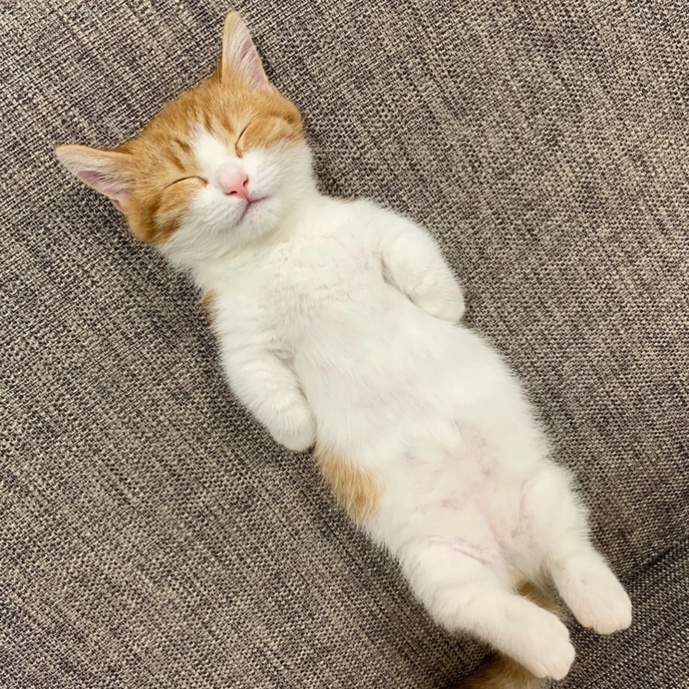
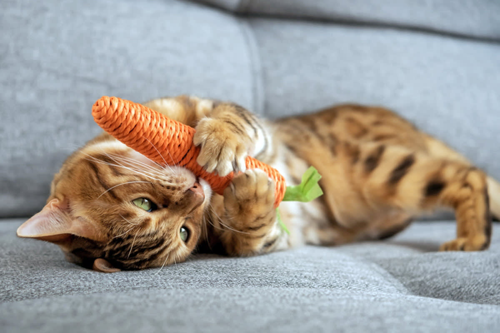
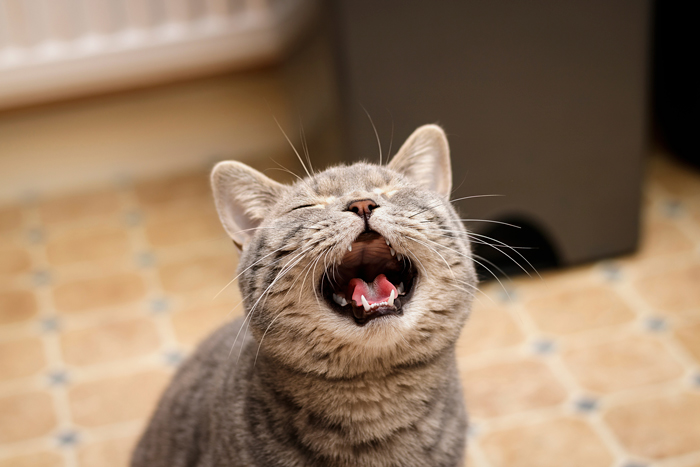
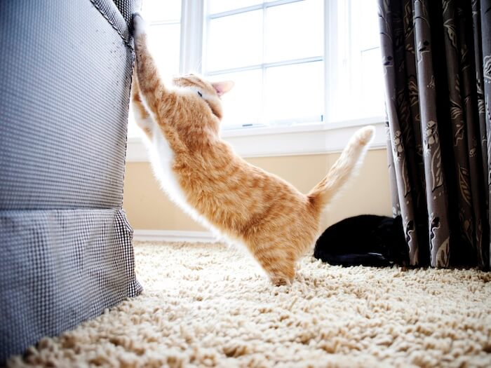
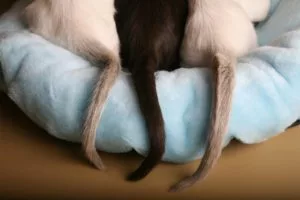

Cat Habits
Learn about the daily behaviors of cats

Sleeping
Cats sleep for many hours every day. They often choose warm, soft, and quiet places to rest.

Playing
Cats love to chase, jump, and explore. Playing helps them stay active and healthy.

Meowing
Cats meow to communicate with people. They may ask for food, attention, or comfort.

Scratching
Scratching helps cats stretch their bodies and keep their claws strong and healthy.

Hiding
Cats sometimes hide when they feel shy, tired, or want a quiet place to relax.

Tail Movements
A cats tail can show emotions. A high tail may mean confidence, while a quick swish can show irritation.